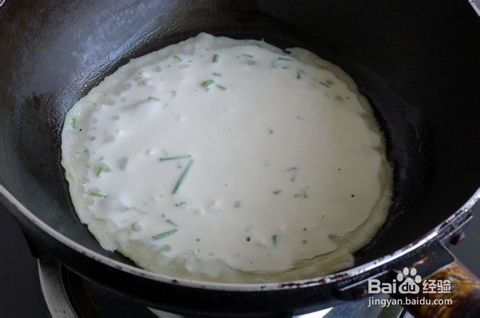
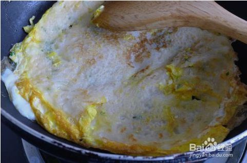
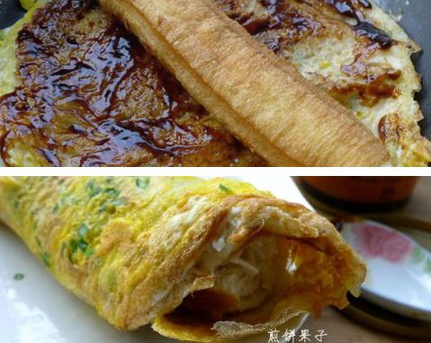

煎饼果子
煎饼果子是天津出名的小吃，天津人把其作为早点。
由绿豆面薄饼，鸡蛋，还有油条或者薄脆的“果篦儿”组成，配以面酱，葱末，辣椒酱作为佐料。
材料： 面粉、鸡蛋、油条、葱、萝卜干、酱

烹饪步骤


1.面粉加适量水调成糊状（可加少许植物油，面饼更软）

2.平底锅烧热加少量油，倒入面糊，晃动锅子使
面糊均匀分布
3.待面糊凝结打入一个鸡蛋，用勺子底部压碎蛋黄以打圈的方式使蛋液均匀分布在面饼上，撒上葱花

4.用铲子协助面饼翻面（蛋液不需要全部凝结）
5.翻面后再加热数秒钟，关火，涂上甜面酱

6.放油条、萝卜干，将面饼卷起来即可